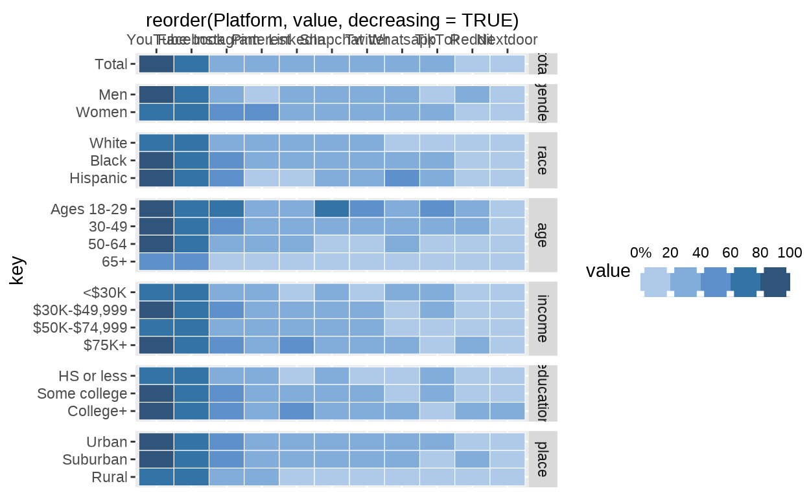
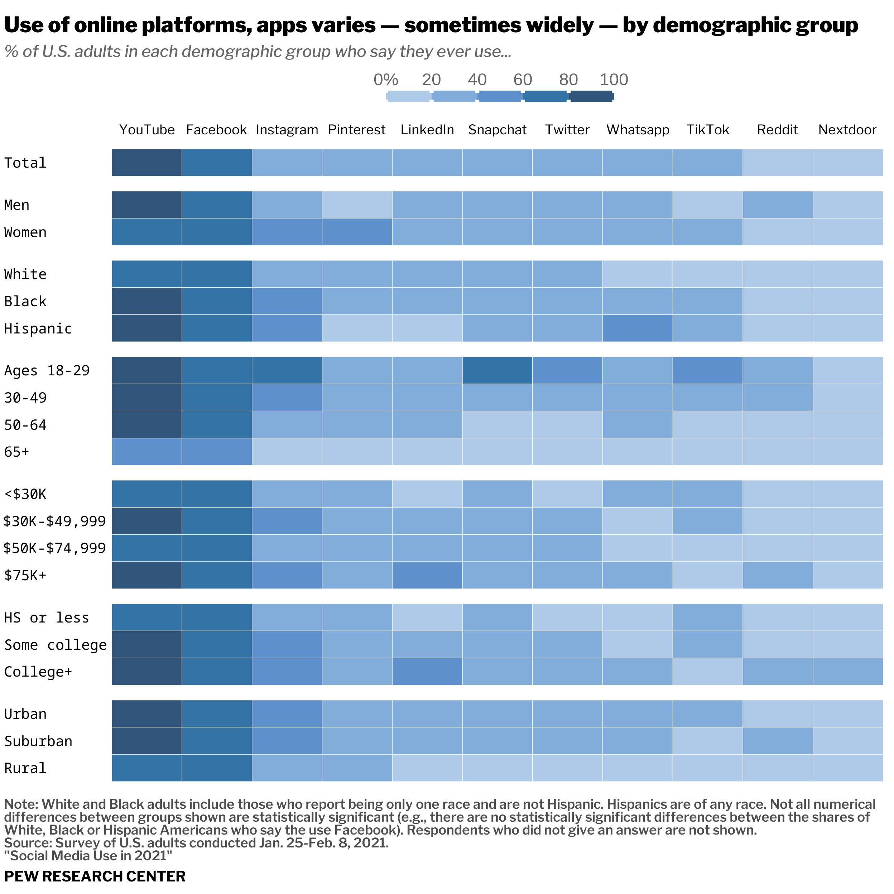
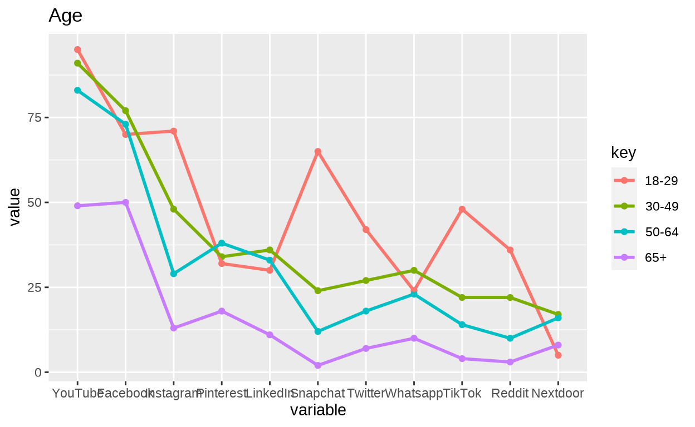
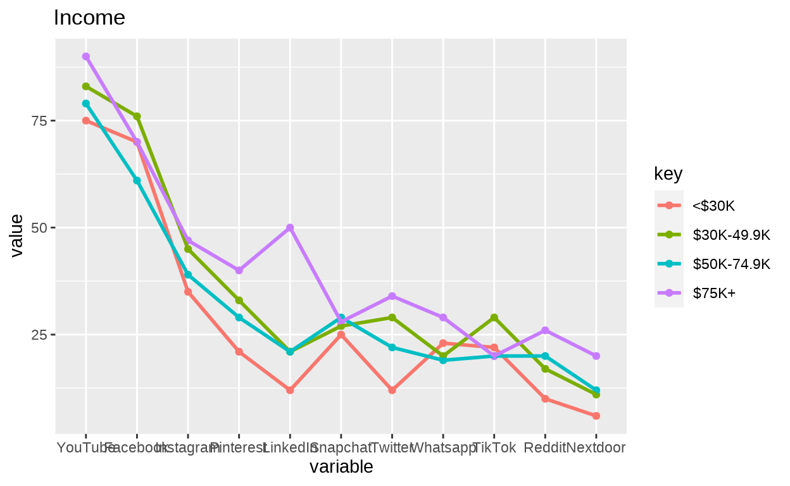
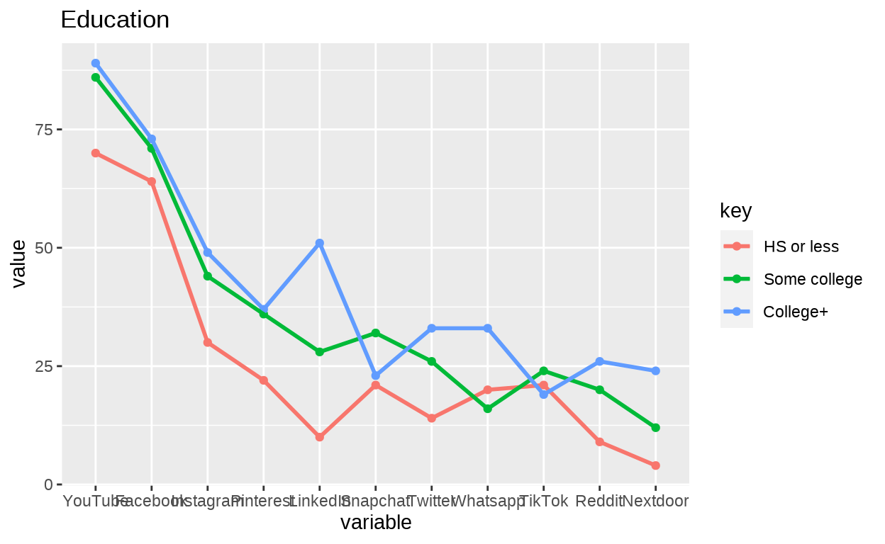
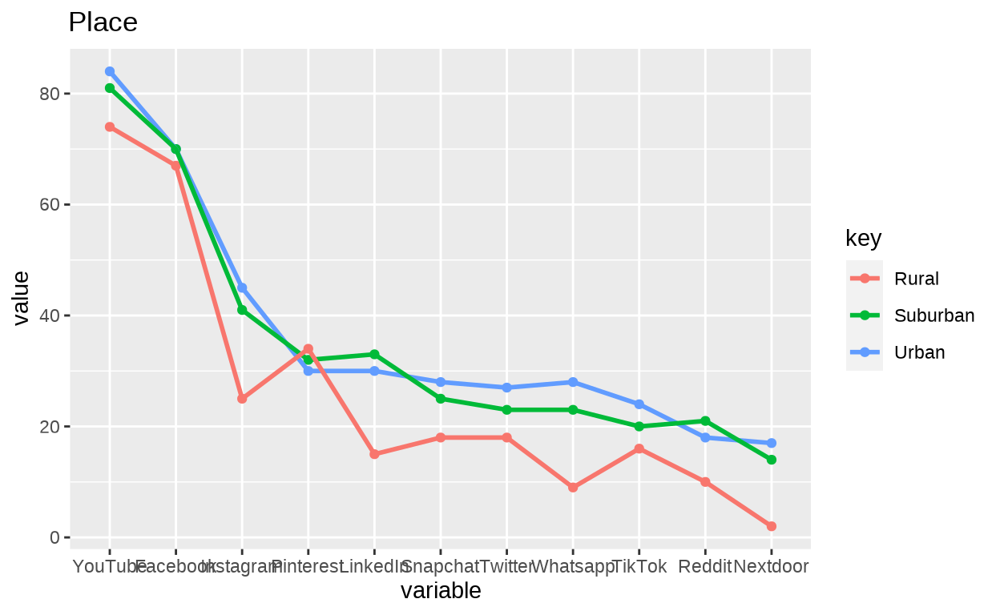
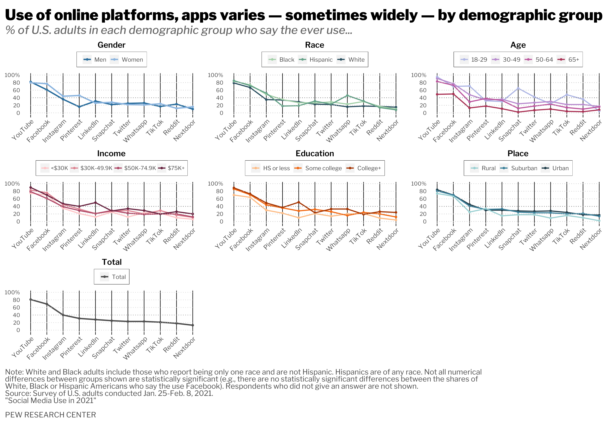

Introduction
This project is based on a graph from the article “Social Media Use in 2021”, published by Brooke Auxier and Monica Anderson in April, 2021. In this article, the authors focus on the differences in the use of social media platforms through time (from 2012 to 2021), as well as on the differences in use in each platform within different demographic groups in 2021 in the U.S.
The platforms under study are: YouTube, Facebook, Instagram, Pinterest, LinkedIn, Snapchat, Twitter, Whatsapp, TikTok, Reddit and Nextdoor. Regarding the demographic groups and divided at the same time in subgroups, we find: gender (Men and Women), race/ethnicity (Black, White and Hispanic), age (18-19 y/o, 30-49 y/o, 50-64 y/o and 65+ y/o), income (<$30K, $30K-$49,999, $50K-$74,999 and $75K+), education (High School or less, Some College, College+) and place (Urban, Suburban and Rural), as well as the total (that from now on, we will be considering when talking about this categories). The results are obtained from a survey conducted on 1502 participants.
I found this publication worth reading since it gives some numbers to analyse the real tendencies in the use of Social Media and, in some cases, disarm some unfounded general beliefs regarding this topic (although the scope is obviously limited to one country).
But, let’s get visual. The plot I chose from this article is a heatmap that represents the percentage of people from several socioeconomic groups that actually use each platform. Here you can see the original plot:
I found this plot interesting to work with since this kind of matrix distribution of the elements was slightly different from the graphs we are use to plot and since it had many aspects to practice: the text annotation of values inside the matrix had different aesthetics (white and bold and black and plain), the facets could be challenging and the font use seemed elaborated.
Collection and data processing
Collection of data
First, we need to download the raw data file from the original article page (we need to log-in to the PEW RESEARCH CENTER website first to access the dataset and the documentation of the methodology). We can find the data .csv file in the documentation in the GitHub folder of this project. Once we have it in our directory, we can read it and store it in “data”:
# Collect and store raw data
data <- read.csv("./documentation/Jan 25-Feb 8, 2021 - Core Trends Survey - CSV.csv")Cleaning and processing data
When we take a look at the data, we find a total of 89 columns and 1502 rows, where each observation represents the answers of one participant). The high amount of columns (apart from being in wide format) is due to the fact that the dataset is also shared by other article (‘Mobile Technology and Home Broadband 2021’).
To clean this dataframe, we need to:
First, think what table we need (final output, original plot): Platforms, demographic groups and percentages. Since the percentages are not in the dataset, we need to compute them by using the values of the platforms and the weights (explained in the methodology section of the article).
Select the variables we need according to our previous conclusions. To understand which variables are the ones we are looking for and which values represent what, it is essential that we read carefully the documentation (Jan 25-Feb 8, 2021 - Core Trends Survey - Questionnaire.docx):
- Socioeconomic categories: gender, racecmb, hisp, age, educ2, usr, income
- weight: weight
- Platforms = web1a (Twitter), web1b (Instagram), web1c (Facebook), web1d (Snapchat), web1e (YouTube), web1f (Whatsapp), web1g (Pinterest), web1h (LinkedIn), web1i (Reddit)
Rename platforms columns, pivot longer the platforms and create dummy variables of subgroups when needed.
clean_data <- data %>%
# Keeping the above mentioned columns of interest:
select(contains("racec") | starts_with("hisp") | contains("gender") |
contains("educ2") | contains("usr") | contains("income") |
contains("weight") | contains("web") | contains("age")) %>%
# Rename the columns of each platform with the actual platform name:
dplyr::rename(Twitter = web1a, Instagram = web1b, Facebook = web1c,
Snapchat = web1d, YouTube = web1e, Whatsapp = web1f,
Pinterest = web1g, LinkedIn = web1h, Reddit = web1i,
TikTok = web1j, Nextdoor = web1k) %>%
# Select these platform columns and pivot them into two columns:
pivot_longer(matches("^[A-Z]", ignore.case = FALSE),
names_to = "Platform", # One column for the name of the platform
values_to = "YesNo" ) %>% # Another for the values (1=Yes, 0=No)
transform(YesNo = as.numeric(YesNo)) %>%
# PLACE: Create 3 columns, one for each of the Urban/Suburban/Rural values
# of the usr column
mutate(Urban = case_when(usr == "U" ~ "1", usr != "U" ~ "0"),
Suburban = case_when(usr == "S" ~ "1", usr != "S" ~ "0"),
Rural = case_when(usr == "R" ~ "1", usr != "R" ~ "0"),
USR_nas = case_when(usr == " " ~ "1", usr != " " ~ "0")
) %>%
# AGE: Create 4 columns, one for each of the age ranges of the graph
# (from age column)
mutate(X18_29 = case_when(age <= 29 ~ 1),
X30_49 = case_when(age <= 49 & age >= 30 ~ 1),
X50_64 = case_when(age >= 50 & age <= 64 ~ 1),
X65. = case_when(age >= 65 & age <= 97 ~ 1)) %>%
# EDUCATION: Create 3 columns, one for each of the education ranges of the graph
# (from educ2 column)
mutate(HS_or_less = case_when(educ2 == 1 ~ 1 ,educ2 == 2 ~ 1, educ2 == 3 ~ 1),
Some_College = case_when(educ2 == 4 ~1, educ2 == 5 ~1),
College = case_when(educ2 == 6 ~1, educ2 == 7 ~1, educ2 == 8 ~1 )) %>%
transform(Urban = as.numeric(Urban), Suburban = as.numeric(Suburban),
Rural = as.numeric(Rural), USR_nas = as.numeric(USR_nas)) - Compute the percentage of each demographic subgroup by:
# Calculating the percentages displayed in the graph
# Function to generate the percentage per category (including weights)
perc <- function(weight, ind_yesno, ind_var) {
round(sum(ind_yesno * ind_var * weight) / sum(ind_var * weight) * 100)
}
clean_data <- clean_data %>%
group_by(Platform) %>%
summarise(
# TOTAL: Percentage of people in the sample that uses sometimes each platform
Total = perc(weight, YesNo==1, rep(1, n())),
# GENDER: Create 2 columns, one for each of the gender categories of the graph
# (from gender column)
Men = perc(weight, YesNo==1, gender==1),
Women = perc(weight, YesNo==1, gender==2),
# RACE: Create 3 columns, one for each of the race groups of the graph
# (from racecmb and hisp columns)
White = perc(weight, YesNo==1, racecmb==1 & hisp!=1),
Black = perc(weight, YesNo==1, racecmb==2 & hisp!=1),
Hispanic = perc(weight, YesNo==1, hisp==1),
# AGE
X18_29 = perc(weight, YesNo==1, !is.na(X18_29)),
X30_49 = perc(weight, YesNo==1, !is.na(X30_49)),
X50_64 = perc(weight, YesNo==1, !is.na(X50_64)),
X65. = perc(weight, YesNo==1, !is.na(X65.)),
# INCOME: Create 4 columns, one for each of the income ranges of the graph
# (from income column)
`Income_30K` = perc(weight, YesNo==1, income <= 3),
`Income_30K_49.999` = perc(weight, YesNo==1, (income <= 5 & income > 3)),
`Income_50K_74.999` = perc(weight, YesNo==1, income == 6),
`Income_75K` = perc(weight, YesNo==1, (income > 6 & income <= 9)),
# EDUCATION
HS_or_less = perc(weight, YesNo==1, !is.na(HS_or_less)),
Some_College = perc(weight, YesNo==1, !is.na(Some_College)),
College = perc(weight, YesNo==1, !is.na(College)),
# PLACE
Urban = perc(weight, YesNo==1, Urban==1),
Suburban = perc(weight, YesNo==1, Suburban==1),
Rural = perc(weight, YesNo==1, Rural==1)
)Storing the new dataframe
For future work, it may be convenient to save the new clean and organised
dataframe: write_csv(clean_data, "clean_data.csv").
Replication: heatmap
Changing the name and ordering X axis labels
Before creating the heatmap, we need to fix some aspects like the names of the columns. In some cases R has changed the names for dealing with white spaces and numbers at the beginning (“X18_19”, “HS_or_less”…). Also, we can order now the name of the platforms according to their value for variable “total” (descending order):
# Change the names of the columns according to the original plot:
colnames(clean_data) <- c("Platform", "Total", "Men", "Women", "White", "Black",
"Hispanic", "Ages 18-29", "30-49", "50-64", "65+", "<$30K",
"$30K-$49,999", "$50K-$74,999", "$75K+", "HS or less",
"Some college", "College+", "Urban", "Suburban", "Rural")
# We arrange platforms' names by their "total" values (descending order)
clean_data <-clean_data %>%
arrange(desc(Total)) %>%
column_to_rownames(var="Platform") #Column "platform" to row namesY axis labels order, padding and pre-faceting
Now let’s work the Y axis labels. We need to:
Create a reference vector. We will create and use a reference vector with the desired order of the labels and with the same padding we will applied for the y labels to order them. Regarding padding, we have to set the width of each of the elements in the outcome vector. In this case, since the longest y axis label has 12 characters, that will be our width.
Padding the real y axis labels. Now we have to apply the same padding used before so both the reference vector and the y labels are equivalent. This padding will avoid the horizontal left justification to be applied only individually by facet instead of in all the facets together.
Order the y labels. Using the reference vector to order the levels.
Creating a column for group faceting
# REFERENCE VECTOR:
# Creating a y axis labels reference vector that will be used for ordering within facets
axisLabels.y <- c("Total", "Men", "Women", "White", "Black",
"Hispanic", "Ages 18-29", "30-49", "50-64", "65+", "<$30K",
"$30K-$49,999", "$50K-$74,999", "$75K+", "HS or less",
"Some college", "College+", "Urban", "Suburban", "Rural")
# Padding the vector (as we will do with key/groups)
axisLabels.y <- str_pad(axisLabels.y, side ="right",
width = 12, pad = " ")
# LABELS ORDER AND PADDING:
rep <- clean_data %>%
# Turning the row names to a column "Platform"
tibble::rownames_to_column("Platform") %>%
# Collecting columns (demographic subgroups, excluding platform column)
# as one column called "key"
# Collecting the previous columns' values as one column called "value"
gather("key", "value", -Platform) %>%
# PADDING Y-axis labels
mutate(key = str_pad(key, side ="right", width = 12,
pad = " ")) %>%
# ORDER Y-axis labels using the reference vector to order the levels
mutate(key = fct_relevel(key, rev(axisLabels.y))) %>%
# CREATING A COLUMN FOR LATTER GROUP FACETTING (total, gender, age, income...)
mutate(group = case_when(
grepl("Total", key) ~ "total",
grepl("Men|Women", key) ~ "gender",
grepl("White|Black|Hispanic", key) ~ "race",
grepl("Ages|30-49|50-64|65", key) ~ "age",
grepl("30K|50K|75K", key) ~ "income",
grepl("HS|ollege", key) ~ "education",
grepl("rban|Rural", key) ~ "place",
)
)Building the plot: geom_tile()
Among all the options available to generate a heatmap, I chose geom_tile().
Facetting
We will use column “group” to establish the facets. For this, we create another reference vector (as we did for y axis labels) to order the items in column “group”. This vector “categories” will act as the levels (and order) of the group column.
# Another reference vector for ordering "group"
categories <- c('total', 'gender', 'race', 'age', 'income', 'education', 'place')
repli <- repl +
# Faceting
facet_grid(factor(repl$data$group,
levels= categories) ~ .,
scales="free", space="free")
repli
X axis and legend scale
For the legend I used scale_fill_stepsn() for selecting individual colors for
each discrete ranges of values (percentages). In order to add the % symbol to
the 0 value only we can create a function called “labeller” that will take the
breaks specified in “breaks” argument and will paste the % symbol after the
value when it is equal to 0.
Regarding the scale color, to select each color code I used the website ImageColorPicker.com, where you can upload an image (in this case, the original plot) and select the colors to get the color codes.
# This function adds a "%" to the break label when it is equal to 0
labeller <- function(breaks) {
if (breaks[1] == 0)
breaks[1] <- paste0(breaks[1], "%")
breaks
}
repli <- repli+
scale_fill_stepsn(breaks=seq(20, 80, 20), limits=c(0, 100), # Percentages
labels=labeller, # Applies the above function
space= "Lab",
colors=c("#c7d9ee", "#8ab4df", "#5e91cb", "#286c9c", "#314565"),
guide=guide_colorsteps(show.limits=TRUE, # 0% and 100 visible
# We can see the ticks:
ticks = TRUE,
direction= "horizontal",
ticks.linewidth= unit(2, 'pt'),
ticks.colour = "white",
# 1 line legend
nrow = 1,
label= TRUE,
# On top of color values
label.position = "top")
)+
# Put X axis on top
scale_x_discrete(position = "top")
repli
Title, subtitle, caption and tag
Introducing the title, subtitle, caption and tag with labs(), adding \n for
newlines and \for special characters (like ““)
repli <- repli+
labs(
title = "Use of online platforms, apps varies — sometimes widely — by demographic group",
subtitle = "\n% of U.S. adults in each demographic group who say they ever use...",
caption = paste0(
'Note: White and Black adults include those who report being only one ',
'race and are not Hispanic. Hispanics are of any race. Not all numerical',
'\ndifferences between groups shown are statistically significant (e.g.,',
' there are no statistically significant differences between the shares ',
'of\nWhite, Black or Hispanic Americans who say the use Facebook). ',
'Respondents who did not give an answer are not shown.\nSource: Survey ',
'of U.S. adults conducted Jan. 25-Feb. 8, 2021.\n\"Social Media Use in 2021\"\n'),
tag = "PEW RESEARCH CENTER",
# No x or y axis title
x=NULL, y = NULL)
repli
Fonts and Theme
Regarding the fonts, initially I used similar fonts by analyzing the typography with whatfontis.com. However, for license reasons, I then selected similar Google fonts. In both cases, I had to use a monospace font version (Noto Sans Mono) for a perfect left justification of the y axis text.
Download the .ttf files of the correspondent font type, load import it from the
correct path and load them. Then add each font to each label, determining the
.ttf file path for each face of the font. Finally, render the fonts with
showtext_auto().
library(extrafont)
library(showtext)
library(sysfonts)
## Add the font with the corresponding font faces:
#Title font
font_add("Libre Franklin Black",
regular = "./fonts/LibreFranklin-Black.ttf",
bold = "./fonts/LibreFranklin-Black.ttf")
# Subtitle font
font_add("Libre Franklin Medium",
regular = "./fonts/LibreFranklin-MediumItalic.ttf",
italic = "./fonts/LibreFranklin-MediumItalic.ttf")
# Y axis text (monospaced Google font for left justification between facets)
sysfonts::font_add_google("Noto Sans Mono")
font_add("Noto Sans Mono",
regular = "./fonts/NotoSansMono-Regular.ttf")
# Geom_text font (values inside matrix), Caption text and and X axis labels
font_add("Libre Franklin",
regular = "./fonts/LibreFranklin-Regular.ttf", # caption and X text
bold = "./fonts/LibreFranklin-SemiBold.ttf")
# Tag text
font_add("Libre Franklin Bold",
regular = "./fonts/LibreFranklin-Bold.ttf")
## Automatically use showtext to render plots
showtext::showtext_auto()Add the settings of the theme relative to facets, x/y axis, plot, labs and legend:
repli <- repli+
theme(
# Labels of the facets (no visible)
strip.text=element_blank(),
# x and y axis
axis.ticks.x= element_blank(),
axis.ticks.y= element_blank(),
axis.text.x.top = element_text(size = 14, color = "black",
margin = margin(10, 10, 10, 10),
family = "Libre Franklin"),
axis.text.y = element_text(size = 15, color = "black",
hjust= 0, margin = margin(0,-5,0,0),
family = "Noto Sans Mono"),
# Plot margins
plot.margin = margin(17,4,22,4),
#Plot labs
plot.title = element_text(color = "black", size = 22.5,
family = "Libre Franklin Black", face = "bold"),
plot.subtitle = element_text(color = "grey40", size = 17, lineheight = 0.2,
family = "Libre Franklin Medium",
face = "italic"),
plot.title.position = "plot",
plot.caption.position = "plot",
plot.caption = element_text(color = "grey30", size= 14, face="bold",
lineheight = 0.8,
family = "Libre Franklin",
hjust = 0, vjust = 0, margin = margin(13,0,0,0)),
plot.tag.position = c(0, -0.01),
plot.tag = element_text(size = 15, family = "Libre Franklin Bold", face = "bold",
hjust = 0, vjust = 0, lineheight = 10),
# Legend
legend.position = "top",
legend.title=element_blank(),
legend.text = element_text(color = "grey40", size = 18)
)
repliAlso, set the theme settings for the background, the grid and the legend (more general aesthetics):
repli <- repli+
theme(
# Panel and plot (spacing and grid)
panel.spacing=unit(10, "pt"),
#transparent panel and plot bg
panel.background = element_rect(fill='transparent', color="white"),
plot.background = element_rect(fill='transparent', color="white"),
panel.grid.major = element_blank(), #remove major gridlines
panel.grid.minor = element_blank(), #remove minor gridlines
# Legend
legend.background = element_rect(color="white"), # white legend bg
legend.box.background = element_rect(color="white"),#no legend panel
legend.key.width = unit(48, 'pt'),
legend.key.height = unit(12, 'pt'),
legend.margin = margin(5, 0, 0, 0)
)
repli
Annotation
The annotation of the values inside the matrix is applied using geom_text().
When the values are above or equal to 40(%) the font is in white and in bold,
when they are below, they are in black and in plain text. Color selection is
created with an individual scale. Bold/plain font is applied by an ifelse
condition.
repli <- repli+
# Face, size, family and justification of text
geom_text(aes(color = value >= 40), family= "Libre Franklin",
fontface= ifelse(repl$data$value < 40, "plain", "bold"),
size = 6, vjust = "center", hjust = "center",
)+
# Color of the text
scale_color_manual(guide = "none", values = c("grey20", "white"))
# Final version:
repliAnd this is the version with no Google Fonts (fonts more similar to the original plot, except for x and y axis text that has to be in a monospaced font):
Alternative version: parallel coordinates
Thinking about an alternative version of the original plot, we can say that, in general terms, the graph is good. Some minor details could be implemented: some colors of the color scale (legend) could have more extreme values to distinguish them better. Also, the labels for the demographic main groups (age, gender, income…) could be added. Optionally, the logos of the platforms could be displayed above their names since we tend to recognize even faster the social media app logos than their names.
Apart from this, the main disadvantage of the plot is the difficulty in visually distinguishing the difference in the tendencies within demographic groups. To solve that, we can use a parallel coordinates plot.
Once we have read the clean_data.csv file we generated in the replication plot,
we create, as before, new column names (these are slightly different from the
other plot in the case of age, for space reasons). Also, we adjust the
data frame for our parallel coordinate plot’s structure: we order according to
descending Total values, we create a column “key” from the demographic group
column names and another column “value” with their values, we filter the
data frame and we create a column for “group” (as before). Then, we pivot wider
the Platform column into individual columns.
dataK <- read.csv("clean_data.csv")
colnames(dataK) <- c("Platform", "Total", "Men", "Women", "White", "Black",
"Hispanic", "18-29", "30-49", "50-64", "65+", "<$30K",
"$30K-49.9K", "$50K-74.9K", "$75K+", "HS or less",
"Some college", "College+", "Urban", "Suburban", "Rural")
dataK <- dataK %>%
# Order by descending values of "Total"
arrange(desc(Total)) %>%
# Create two columns: key (demo. subgroups) and value (percentages)
gather("key", "value", -Platform) %>%
# Filter
filter(key %in% c("Total", "Men", "Women", "White", "Black", "Hispanic",
"18-29", "30-49", "50-64", "65+","<$30K",
"$30K-49.9K", "$50K-74.9K", "$75K+", "HS or less",
"Some college", "College+", "Urban", "Suburban", "Rural")
) %>%
# Create a "group" column
mutate(group = case_when(
key == "Total" ~ "total",
key %in% c("Men", "Women") ~ "gender",
key %in% c("White", "Black", "Hispanic") ~ "race",
key %in% c("18-29", "30-49", "50-64", "65+") ~ "age",
key %in% c("<$30K","$30K-49.9K", "$50K-74.9K", "$75K+") ~"income",
key %in% c("HS or less", "Some college", "College+") ~ "education",
key %in% c("Urban", "Suburban", "Rural") ~ "place"
)) %>%
# Pivot wider
pivot_wider(names_from = "Platform",
values_from = "value"
) Building the plots: ggparcoord()
The idea is to create individual parallel coordinate plots for each of the
demographic groups, using an individual color scale for each one (color-hue
scales). We will use ggparcoord() for this purpose.
We will need to discard the percentage values (geom_text()). Otherwise, we wouldn’t be able to properly read them.
We will repeat almost the same process: filter data frame by the group, building the ggplot (x axis the platforms, y axis the percentages) and setting the line size. In some cases, we will need a reference vector to order the variables in the legend.
Total
Gender
gender <- dataK%>%
# Filter by group
filter(group == "gender") %>%
# Generating the plot
ggparcoord(dataK,
columns= c(3:13), # Platforms
groupColumn = "key", # Demographic subgroups
showPoints = TRUE,
order= c(2:21),
title= "Gender",
scale= "globalminmax",
alphaLines = 0.7
)+
# Line thickness
geom_line(size= 1.2)
genderRace/Ethnicity
Age
age <- dataK%>%
filter(group == "age") %>% # Filtering by age
ggparcoord(dataK,
columns= c(3:13),
groupColumn = "key",
showPoints = TRUE,
order= c(2:21),
title= "Age",
scale= "globalminmax",
alphaLines = 0.7
)+
geom_line(size=1)
age
Income
order_inc <- c("<$30K", "$30K-49.9K", "$50K-74.9K", "$75K+")
income <- dataK%>%
filter(group == "income") %>% # Filtering by income category
mutate(key = fct_relevel (key, levels = order_inc)) # Ordering income subgroups
income <- dataK%>%
filter(group == "income") %>%
mutate(key = fct_relevel (key, levels = order_inc)) %>%
ggparcoord(dataK,
columns= c(3:13),
groupColumn = "key",
showPoints = TRUE,
order= c(2:21),
title= "Income",
scale= "globalminmax",
alphaLines = 0.7,
)+
geom_line(size=1)
income
Education
order_educ <- c("HS or less", "Some college", "College+") # Ordered levels vector
education <- dataK%>%
filter(group == "education") %>% # Filtering education categories
mutate(key = fct_relevel (key, levels = order_educ))
education <- education %>%
ggparcoord(dataK,
columns= c(3:13),
groupColumn = "key",
showPoints = TRUE,
order= c(2:21),
title= "Education",
scale= "globalminmax",
alphaLines = 0.7,
)+
geom_line(size=1)
education
Place
place <- dataK%>%
filter(group == "place") %>%
ggparcoord(dataK,
columns= c(3:13),
groupColumn = "key",
showPoints = TRUE,
order= c(2:21),
title= "Place",
scale= "globalminmax",
alphaLines = 0.7,
)+
geom_line(size=1)
place
Color scales and theme
At the beginning I tried to use mostly hue-colors palettes with
scale_color_discrete_sequential(). However, in some cases I had to use
scale_color_manual() to select the colors and correct the low color value
(too bright).
In relation to the theme, initially, I tried to give more emphasis to the 40% value (as in the original plot). However, as pointed by the teacher, introducing a horizontal line could give the feeling of a timeline. Therefore, I tried to keep the horizontal lines as subtle as possible (but still visible for the easily reader to read the percentages) while giving emphasis to the vertical lines (grid).
Total
# Grid annotations (horizontal, x axis)
total <- total+
geom_line(aes(y = 40), color = "grey50", linetype = "dotted")+
geom_line(aes(y = 20), color = "grey80", linetype = "dotted")+
geom_line(aes(y = 60), color = "grey80", linetype = "dotted")+
geom_line(aes(y = 80), color = "grey80", linetype = "dotted")+
geom_line(aes(y = 100), color = "grey80", linetype = "dotted")+
geom_line(aes(y = 0), color = "grey80", linetype = "dotted")
total <- total +
# Scales
scale_colour_manual(values = c("Total"= "grey30"))+
scale_y_continuous(
name = NULL,
limits=c(0, 101),
breaks = c(0, 20, 40, 60, 80, 100),
labels = c("0", "20", "40", "60", "80", "100%"))+
labs(x=NULL, y = NULL)+
#Theme
theme(
plot.title = element_text(size=15, hjust = 0.5, family="Libre Franklin",
face= "bold", color= "black"),
plot.title.position = "panel",
axis.ticks.length.x = unit(2, "pt"),
legend.position = "top",
legend.box = "horizontal",
legend.title=element_blank(),
legend.text = element_text(color = "grey30",family="Libre Franklin",
face= "plain", size = 11),
panel.spacing = unit(0.5, "lines"),
panel.border = element_rect(colour = "white", fill=NA, size=1),
# Emphasis to the vertical lines
axis.ticks.x.bottom = element_line(color = "black"),
panel.grid.major.x = element_line(colour = "black", linetype = "solid"),
panel.grid.minor.x = element_line(colour = "black", linetype = "solid"),
panel.background = element_rect(fill = "transparent"),
# X and Y axis
axis.text.y = element_text(color = "grey30", family="Libre Franklin",
face= "plain", size = 10),
axis.text.x = element_text(color="grey30", family="Libre Franklin",
face= "plain", size= 12, angle= 45, hjust= 1),
axis.ticks.length = unit(0, "pt"),
axis.ticks.length.x.bottom = unit(5, "pt"),
# legend
legend.box.background = element_rect(fill = "white")
)
totalGender
gender <- gender+
geom_line(aes(y = 40), color = "grey50", linetype = "dotted")+
geom_line(aes(y = 20), color = "grey80", linetype = "dotted")+
geom_line(aes(y = 60), color = "grey80", linetype = "dotted")+
geom_line(aes(y = 80), color = "grey80", linetype = "dotted")+
geom_line(aes(y = 100), color = "grey80", linetype = "dotted")+
geom_line(aes(y = 0), color = "grey80", linetype = "dotted")
gender <- gender +
scale_colour_manual(values = c("Women"= "#8ab4df", "Men"= "#286c9c"))+
scale_y_continuous(
name = NULL,
limits=c(0, 101),
breaks = c(0, 20, 40, 60, 80, 100),
labels = c("0", "20", "40", "60", "80", "100%"))+
labs(x=NULL, y = NULL)+
theme(
plot.title = element_text(size=15, hjust = 0.5, family="Libre Franklin",
face= "bold", color= "black"),
plot.title.position = "panel",
axis.ticks.length.x = unit(2, "pt"),
legend.position = "top",
legend.box = "horizontal",
legend.title=element_blank(),
legend.text = element_text(color = "grey30",family="Libre Franklin",
face= "plain", size = 11),
panel.spacing = unit(0.5, "lines"),
panel.border = element_rect(colour = "white", fill=NA, size=1),
axis.ticks.x.bottom = element_line(color = "black"),
panel.grid.major.x = element_line(colour = "black", linetype = "solid"),
panel.grid.minor.x = element_line(colour = "black", linetype = "solid"),
panel.background = element_rect(fill = "transparent"),
axis.text.y = element_text(color = "grey30", family="Libre Franklin",
face= "plain", size = 10),
axis.text.x = element_text(color="grey30", family="Libre Franklin",
face= "plain", size= 12, angle= 45, hjust= 1),
axis.ticks.length = unit(0, "pt"),
axis.ticks.length.x.bottom = unit(5, "pt"),
legend.box.background = element_rect(fill = "white")
)
genderThe rest of demographic groups
Apply the same theme and color scale style to the rest of socioeconomic categories:
#RACE
race <- race+
geom_line(aes(y = 40), color = "grey50", linetype = "dotted")+
geom_line(aes(y = 20), color = "grey80", linetype = "dotted")+
geom_line(aes(y = 60), color = "grey80", linetype = "dotted")+
geom_line(aes(y = 80), color = "grey80", linetype = "dotted")+
geom_line(aes(y = 100), color = "grey80", linetype = "dotted")+
geom_line(aes(y = 0), color = "grey80", linetype = "dotted")
race <- race +
scale_color_manual(values = c("Black"= "#a2d0a8", "Hispanic" = "#62a086",
"White"= "#294e5e"))+
scale_y_continuous(
name = NULL,
limits=c(0, 101),
breaks = c(0, 20, 40, 60, 80, 100),
labels = c("0", "20", "40", "60", "80", "100%"))+
labs(x=NULL, y = NULL)+
theme(
plot.title = element_text(size=15, hjust = 0.5, family="Libre Franklin",
face= "bold", color= "black"),
plot.title.position = "panel",
axis.ticks.length.x = unit(2, "pt"),
legend.position = "top",
legend.box = "horizontal",
legend.title=element_blank(),
legend.text = element_text(color = "grey30",family="Libre Franklin",
face= "plain", size = 11),
panel.spacing = unit(0.5, "lines"),
panel.border = element_rect(colour = "white", fill=NA, size=1),
axis.ticks.x.bottom = element_line(color = "black"),
panel.grid.major.x = element_line(colour = "black", linetype = "solid"),
panel.grid.minor.x = element_line(colour = "black", linetype = "solid"),
panel.background = element_rect(fill = "transparent"),
axis.text.y = element_text(color = "grey30", family="Libre Franklin",
face= "plain", size = 10),
axis.text.x = element_text(color="grey30", family="Libre Franklin",
face= "plain", size= 12, angle= 45, hjust= 1),
axis.ticks.length = unit(0, "pt"),
axis.ticks.length.x.bottom = unit(5, "pt"),
legend.box.background = element_rect(fill = "white")
)
# AGE
age <- age+
geom_line(aes(y = 40), color = "grey50", linetype = "dotted")+
geom_line(aes(y = 20), color = "grey80", linetype = "dotted")+
geom_line(aes(y = 60), color = "grey80", linetype = "dotted")+
geom_line(aes(y = 80), color = "grey80", linetype = "dotted")+
geom_line(aes(y = 100), color = "grey80", linetype = "dotted")+
geom_line(aes(y = 0), color = "grey80", linetype = "dotted")
age <- age +
scale_color_discrete_sequential(palette= "Red-Blue")+
scale_y_continuous(
name = NULL,
limits=c(0, 101),
breaks = c(0, 20, 40, 60, 80, 100),
labels = c("0", "20", "40", "60", "80", "100%"))+
labs(x=NULL, y = NULL)+
theme(
plot.title = element_text(size=15, hjust = 0.5, family="Libre Franklin",
face= "bold", color= "black"),
plot.title.position = "panel",
axis.ticks.length.x = unit(2, "pt"),
legend.position = "top",
legend.box = "horizontal",
legend.title=element_blank(),
legend.text = element_text(color = "grey30",family="Libre Franklin",
face= "plain", size = 11),
panel.spacing = unit(0.5, "lines"),
panel.border = element_rect(colour = "white", fill=NA, size=1),
axis.ticks.x.bottom = element_line(color = "black"),
panel.grid.major.x = element_line(colour = "black", linetype = "solid"),
panel.grid.minor.x = element_line(colour = "black", linetype = "solid"),
panel.background = element_rect(fill = "transparent"),
axis.text.y = element_text(color = "grey30", family="Libre Franklin",
face= "plain", size = 10),
axis.text.x = element_text(color="grey30", family="Libre Franklin",
face= "plain", size= 12, angle= 45, hjust= 1),
axis.ticks.length = unit(0, "pt"),
axis.ticks.length.x.bottom = unit(5, "pt"),
legend.box.background = element_rect(fill = "white")
)
# INCOME
income <- income +
geom_line(aes(y = 40), color = "grey50", linetype = "dotted")+
geom_line(aes(y = 20), color = "grey80", linetype = "dotted")+
geom_line(aes(y = 60), color = "grey80", linetype = "dotted")+
geom_line(aes(y = 80), color = "grey80", linetype = "dotted")+
geom_line(aes(y = 100), color = "grey80", linetype = "dotted")+
geom_line(aes(y = 0), color = "grey80", linetype = "dotted")
income <- income +
scale_color_discrete_sequential(palette= "Burg")+
scale_y_continuous(
name = NULL,
limits=c(0, 101),
breaks = c(0, 20, 40, 60, 80, 100),
labels = c("0", "20", "40", "60", "80", "100%"))+
labs(x=NULL, y = NULL)+
theme(
plot.title = element_text(size=15, hjust = 0.5, family="Libre Franklin",
face= "bold", color= "black"),
plot.title.position = "panel",
axis.ticks.length.x = unit(2, "pt"),
legend.position = "top",
legend.box = "horizontal",
legend.title=element_blank(),
legend.text = element_text(color = "grey30",family="Libre Franklin",
face= "plain", size = 10),
legend.spacing.x = unit(3, "pt"),
panel.spacing = unit(0.5, "lines"),
panel.border = element_rect(colour = "white", fill=NA, size=1),
axis.ticks.x.bottom = element_line(color = "black"),
panel.grid.major.x = element_line(colour = "black", linetype = "solid"),
panel.grid.minor.x = element_line(colour = "black", linetype = "solid"),
panel.background = element_rect(fill = "transparent"),
axis.text.y = element_text(color = "grey30", family="Libre Franklin",
face= "plain", size = 10),
axis.text.x = element_text(color="grey30", family="Libre Franklin",
face= "plain", size= 12, angle= 45, hjust= 1),
axis.ticks.length = unit(0, "pt"),
axis.ticks.length.x.bottom = unit(5, "pt"),
legend.box.background = element_rect(fill = "white")
)
# EDUCATION
education <- education +
geom_line(aes(y = 40), color = "grey50", linetype = "dotted")+
geom_line(aes(y = 20), color = "grey80", linetype = "dotted")+
geom_line(aes(y = 60), color = "grey80", linetype = "dotted")+
geom_line(aes(y = 80), color = "grey80", linetype = "dotted")+
geom_line(aes(y = 100), color = "grey80", linetype = "dotted")+
geom_line(aes(y = 0), color = "grey80", linetype = "dotted")
education <- education +
scale_colour_manual(values = c("HS or less"= "#fdbb84",
"Some college"= "#f16914",
"College+" = "#a63603"))+
scale_y_continuous(
name = NULL,
limits=c(0, 101),
breaks = c(0, 20, 40, 60, 80, 100),
labels = c("0", "20", "40", "60", "80", "100%"))+
labs(x=NULL, y = NULL)+
theme(
plot.title = element_text(size=15, hjust = 0.5, family="Libre Franklin",
face= "bold", color= "black"),
plot.title.position = "panel",
axis.ticks.length.x = unit(2, "pt"),
legend.position = "top",
legend.box = "horizontal",
legend.title=element_blank(),
legend.text = element_text(color = "grey30",family="Libre Franklin",
face= "plain", size = 11),
panel.spacing = unit(0.5, "lines"),
panel.border = element_rect(colour = "white", fill=NA, size=1),
axis.ticks.x.bottom = element_line(color = "black"),
panel.grid.major.x = element_line(colour = "black", linetype = "solid"),
panel.grid.minor.x = element_line(colour = "black", linetype = "solid"),
panel.background = element_rect(fill = "transparent"),
axis.text.y = element_text(color = "grey30", family="Libre Franklin",
face= "plain", size = 10),
axis.text.x = element_text(color="grey30", family="Libre Franklin",
face= "plain", size= 12, angle= 45, hjust= 1),
axis.ticks.length = unit(0, "pt"),
axis.ticks.length.x.bottom = unit(5, "pt"),
legend.box.background = element_rect(fill = "white")
)
# PLACE
place <- place +
geom_line(aes(y = 40), color = "grey50", linetype = "dotted")+
geom_line(aes(y = 20), color = "grey80", linetype = "dotted")+
geom_line(aes(y = 60), color = "grey80", linetype = "dotted")+
geom_line(aes(y = 80), color = "grey80", linetype = "dotted")+
geom_line(aes(y = 100), color = "grey80", linetype = "dotted")+
geom_line(aes(y = 0), color = "grey80", linetype = "dotted")
place <- place +
scale_color_manual(values = c("Urban" = "#213e4b",
"Suburban" = "#3b809a", "Rural" = "#99cfd1"))+
scale_y_continuous(
name = NULL,
limits=c(0, 101),
breaks = c(0, 20, 40, 60, 80, 100),
labels = c("0", "20", "40", "60", "80", "100%"))+
labs(x=NULL, y = NULL)+
theme(
plot.title = element_text(size=15, hjust = 0.5, family="Libre Franklin",
face= "bold", color= "black"),
plot.title.position = "panel",
axis.ticks.length.x = unit(2, "pt"),
legend.position = "top",
legend.box = "horizontal",
legend.title=element_blank(),
legend.text = element_text(color = "grey30",family="Libre Franklin",
face= "plain", size = 11),
panel.spacing = unit(0.5, "lines"),
panel.border = element_rect(colour = "white", fill=NA, size=1),
axis.ticks.x.bottom = element_line(color = "black"),
panel.grid.major.x = element_line(colour = "black", linetype = "solid"),
panel.grid.minor.x = element_line(colour = "black", linetype = "solid"),
panel.background = element_rect(fill = "transparent"),
axis.text.y = element_text(color = "grey30", family="Libre Franklin",
face= "plain", size = 10),
axis.text.x = element_text(color="grey30", family="Libre Franklin",
face= "plain", size= 12, angle= 45, hjust= 1),
axis.ticks.length = unit(0, "pt"),
axis.ticks.length.x.bottom = unit(5, "pt"),
legend.box.background = element_rect(fill = "white")
) Patchwork and general theme
We need to paste all the individual plots together with {Patchwork}, add the
title, subtitle and caption with plot_annotation() and add the aesthetics with
theme(). We should keep some coherence in the aesthetics so we will recycle
some elements from the theme of the replication (the plot is expected to be in
the article and should match the rest of the plots).
library(patchwork)
# Pasting the plots together
global <-gender+race+age+income+
education+place+total+
# Distribution in 3 lines
plot_layout(ncol = 3)+
# Labs annotation:
plot_annotation(
title = "Use of online platforms, apps varies — sometimes widely — by demographic group",
subtitle = "% of U.S. adults in each demographic group who say the ever use...",
caption = paste0(
'Note: White and Black adults include those who report being only one ',
'race and are not Hispanic. Hispanics are of any race. Not all numerical',
'\ndifferences between groups shown are statistically significant (e.g.,',
' there are no statistically significant differences between the shares ',
'of\nWhite, Black or Hispanic Americans who say the use Facebook). ',
'Respondents who did not give an answer are not shown.\nSource: Survey ',
'of U.S. adults conducted Jan. 25-Feb. 8, 2021.\n\"Social Media Use in 2021\"',
'\n\nPEW RESEARCH CENTER'),
theme= theme(plot.margin = margin(17,4,22,4),
plot.title = element_text(color = "black", size = 28,
family = "Libre Franklin Black",
face = "bold"),
plot.subtitle = element_text(color = "grey40", size = 21,
lineheight = 0.2,
family = "Libre Franklin Medium",
face = "italic"),
plot.title.position = "plot",
plot.caption.position = "plot",
plot.caption = element_text(color = "grey30", size= 14, face="plain",
lineheight = 0.8,
family = "Libre Franklin",
hjust = 0, vjust = 0)
)
)
# Final result of the replication
global
Conclusions
Apart from the put-in-practice opportunity of what was seen during the course of Data Visualization, I would like to highlight some findings and messages for my future self:
- It has been such a great exercise to face a real-world example of dataset and documentation and learn from mistakes. Always read carefully all the documents in the documentation, it’s all there and it shows (or it should do) the reasoning behind the author’s choices. The time invested in reading the documentation will save you tons of time.
- Use RMarkdown from the beginning, especially if you intend to share your project. Comments in .R are ok (if you remember to add them), but adding text and separate your scripts in chunks gives you a more visually organised result. Plus, using chunks allows you to section your work progress in stages and it’s easier to control bugs.
- There must be always an ending, specially when replicating.
- Leave the fonts and the export size for the last stage (even if it’s hard to watch). Otherwise, you may invest too much time in doing this process iteratively. And don’t forget to render them before trying the next font of the list.